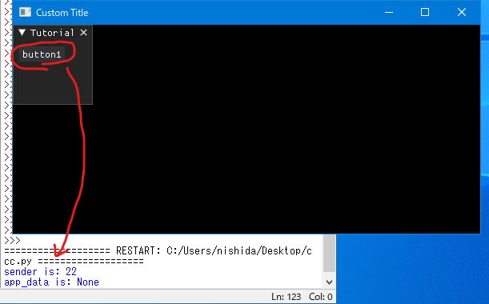
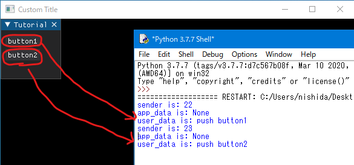

2nd January 2023 at 9:20pm
Dear PyGuiではアイテムが操作された時にコールバック関数を実行することが可能です。
コールバック関数には最大3つの引数があります。1つ目は、コールバック関数を実行するアイテムの番号です。2つ目は、Dear PyGuiによって送信されたデータです。（Noneの場合もあります）3つ目は、ユーザー指定のデータです。それぞれ、sender、app_data、user_dataと命名されています。
senderとapp_data
以下は、コールバックのサンプルスクリプト4です。
「button1」と表示されたボタンを押すと、コールバック関数（button_callback）が実行され、senderとapp_dataの内容がターミナルに表示されます。
# サンプルスクリプト4
import dearpygui.dearpygui as dpg
dpg.create_context()
dpg.create_viewport(title='Custom Title', width=600, height=300)
def button_callback(sender, app_data):
print(f"sender is: {sender}")
print(f"app_data is: {app_data}")
with dpg.window(label="Tutorial"):
dpg.add_button(label="button1", callback=button_callback)
dpg.setup_dearpygui()
dpg.show_viewport()
dpg.start_dearpygui()
dpg.destroy_context()サンプルスクリプト4を実行すると以下のようになります。

user_data
以下は、user_dataのサンプルスクリプト5です。
# サンプルスクリプト5
import dearpygui.dearpygui as dpg
dpg.create_context()
dpg.create_viewport(title='Custom Title', width=600, height=300)
def button_callback(sender, app_data, user_data):
print(f"sender is: {sender}")
print(f"app_data is: {app_data}")
print(f"user_data is: {user_data}")
with dpg.window(label="Tutorial"):
dpg.add_button(label="button1", callback=button_callback, user_data="push button1")
dpg.add_button(label="button2", callback=button_callback, user_data="push button2")
dpg.setup_dearpygui()
dpg.show_viewport()
dpg.start_dearpygui()
dpg.destroy_context()サンプルスクリプト5を実行すると以下のようになります。
